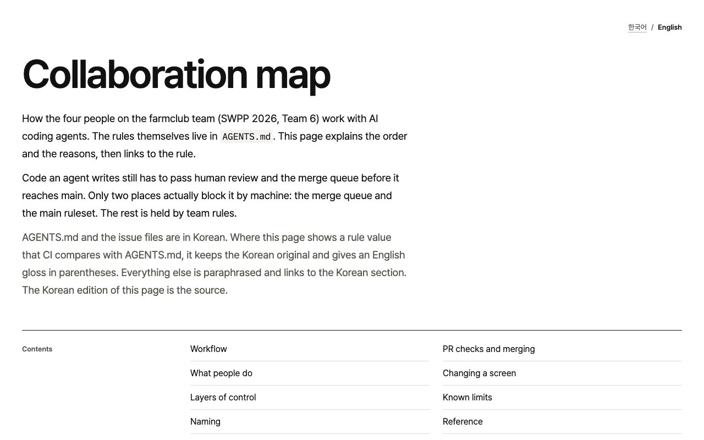
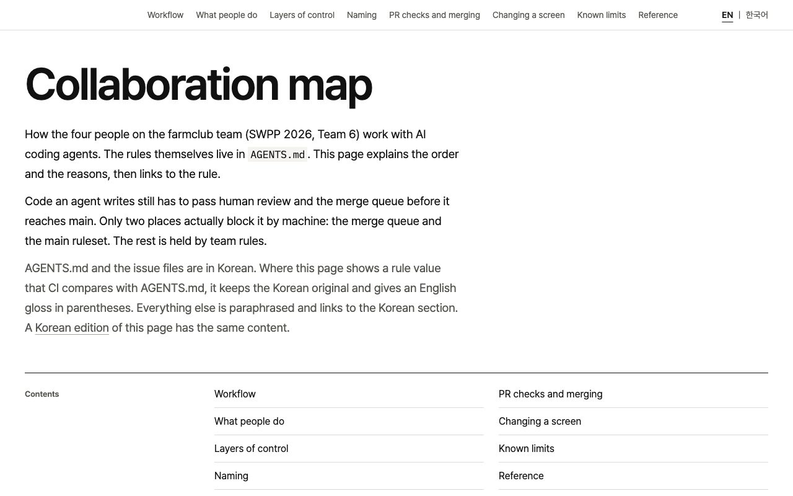
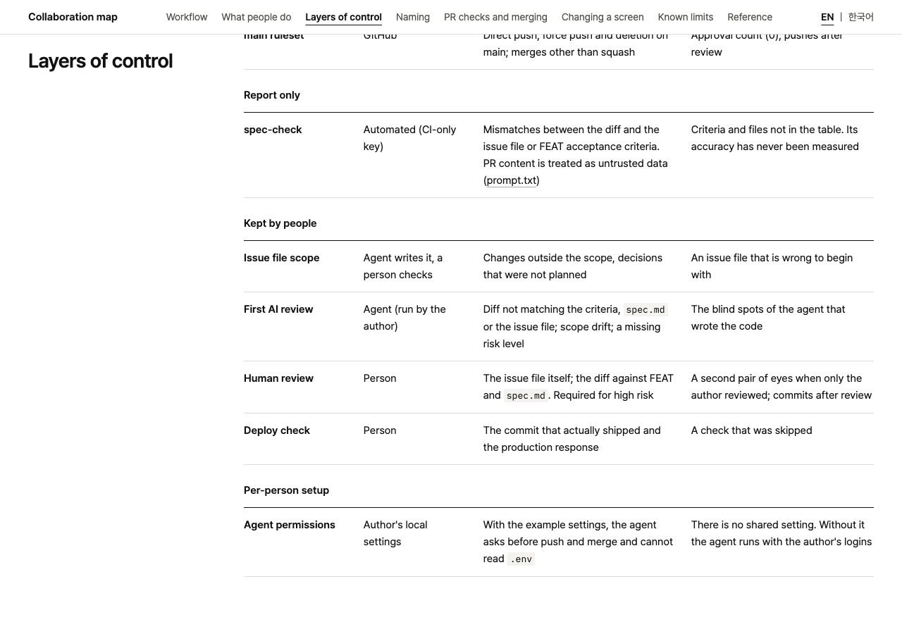
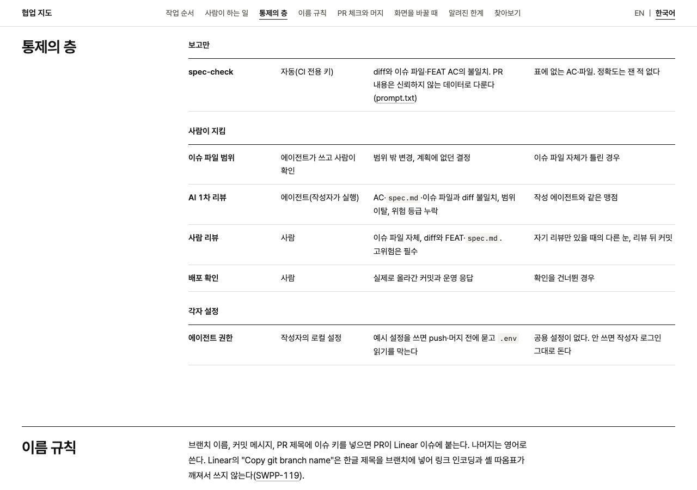
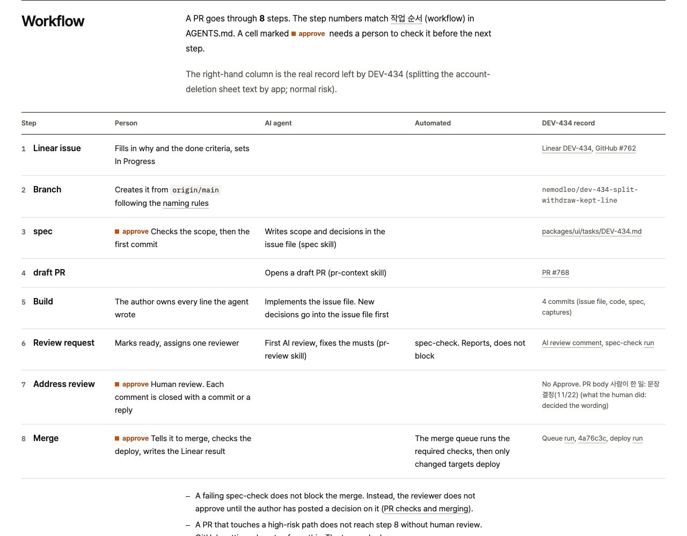
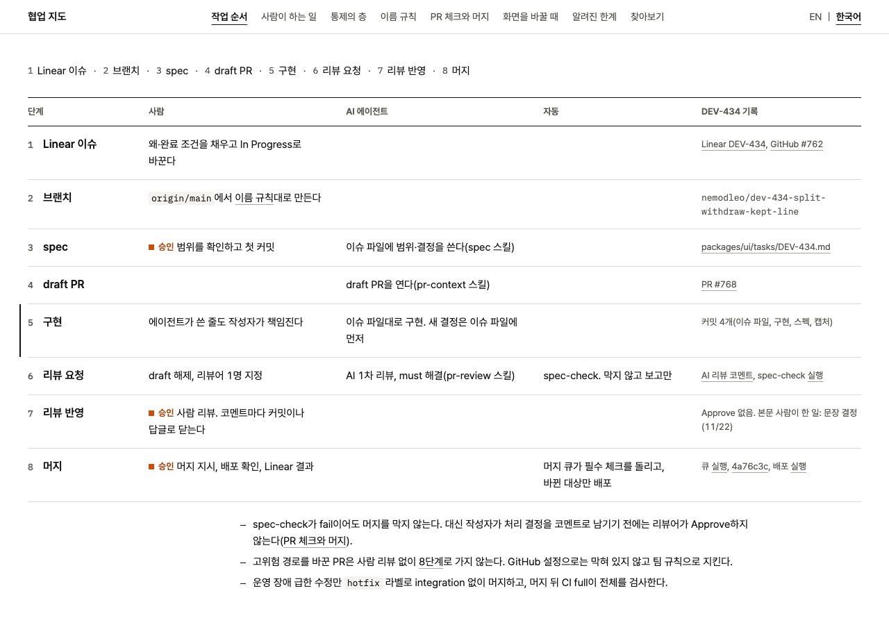
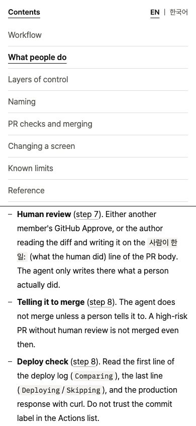
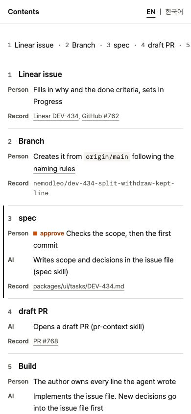
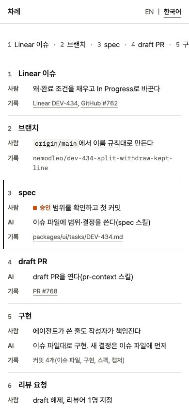

전후 · 1280
위가 전, 아래가 후 · 줄이지 않음






오너 요청은 "원하는 단계로 쉽게 가고, KO/EN 전환 UI"였다. 같은 날 영어판이 기본(/guide/)이 되고 한국어판은 /guide/ko/로 옮겼다. 색은 잉크와 가는 선만 쓰고, 주황은 계속 승인 표지에만 둔다.
두 판 맨 위에 붙는 바. 바탕색 그대로, 아래 1px 선 하나, 그림자 없음. 왼쪽은 큰 제목이 바 뒤로 지나간 뒤에만 보이는 페이지 이름, 가운데는 차례와 같은 절 이름 여덟, 오른쪽은 언어 바꾸기.
지금 보는 절은 잉크·굵게·1px 밑줄, aria-current="true". 계획은 IntersectionObserver였지만 절이 화면보다 길어 비율 문턱이 바 아래 선을 넘는 순간을 놓쳐서, 스크롤마다(프레임당 한 번) 바 아래 24px 선을 지난 마지막 절을 고른다.
두 칸짜리 글자 링크. 지금 판은 잉크·밑줄, 다른 판은 회색 링크. 둘 다 실제 <a>에 hreflang·lang이라 JS 없이 이동한다. JS가 있으면 다른 판 링크에 지금 절이나 단계 id를 실어 같은 자리로 간다.
브라우저 언어로 옮기거나 선택을 저장하지 않는다. 공유한 링크는 누구에게나 같은 판이 열린다. hreflang alternate에 en, ko, x-default(영어판).
ko/ · ../작업 순서 표의 행에 step-1~step-8(두 판 같음). 행 번호가 자기 링크라 그대로 복사해 공유한다. 표 위에 "1 Linear issue · 2 Branch · … · 8 Merge" 한 줄. 본문의 3·7·8단계 언급도 그 행으로 가는 링크다.
링크로 온 행은 왼쪽 2px 잉크 선(:target). 주황은 쓰지 않는다. 390에서는 단계 줄을 두 줄로 감싸면 44px씩 네 줄이 돼 가로로 밀어 보게 했다.
모든 id에 scroll-margin-top: 64px, 고정되는 절 제목은 top: 68px. 처음엔 scroll-padding-top도 같이 둬 64px이 두 번 더해졌고(제목이 128px에 섬), 현재 절 표시가 한 칸 앞 절을 가리켰다. 하나만 남겼다.
1200px 미만은 절 링크 여덟 대신 <details> 차례(Contents / 차례) 하나. 아이콘 없이 글자이고 열면 밑줄. 언어 바꾸기는 늘 보인다. 560px 이하는 페이지 이름을 숨겨 자리를 만든다.
계획은 390에서만 바꾸는 것이었지만, 영어 절 이름 여덟은 1160px에서 넘쳐 1200을 경계로 잡았다.
인쇄에서 바와 건너뛰기 링크를 숨기고 단계 줄은 링크 모양 없이. 어두운 테마는 기존 토큰만. prefers-reduced-motion이면 부드러운 스크롤을 끈다. 바 링크가 열 개 넘게 탭에 걸려 첫 탭에 "Skip to content / 본문으로 건너뛰기"를 둔다.
안에 넣은 스크립트 하나(외부 요청·저장 없음). JS가 꺼져도 바 링크·차례·단계 링크는 모두 이동하고, 잃는 것은 현재 절 표시, 제목 뒤 이름 숨김, 언어 링크의 위치 싣기뿐이다. check-guide 대조에 페이지 안 링크 집합을 더했고 id 대조가 단계 id를 포함한다.
| 항목 | 영어판 1280 | 영어판 390 | 한국어판 1280 | 한국어판 390 |
|---|---|---|---|---|
| 바 링크(390은 차례) 눌러 착지·현재 절 표시 | 8/8 | 8/8 | 8/8 | 8/8 |
단계 링크(줄·번호·본문) 착지·:target | 21/21 | 21/21 | 21/21 | 21/21 |
| 페이지 안 앵커 전부 | 19/19 | 19/19 | 19/19 | 19/19 |
| #controls에서 언어 바꾸기 | → /guide/ko/#controls, 화면 안 | → /guide/#controls, 화면 안 | ||
| #step-5에서 언어 바꾸기 | → /guide/ko/#step-5, 화면 안 | → /guide/#step-5, 화면 안 | ||
| 가로 넘침 · 최소 글자 | 0 · 13 | 0 · 13 | 0 · 13 | 0 · 13 |
| JS 꺼짐 | 바 링크, 단계 줄, 390 차례 모두 이동. 페이지 이름은 늘 보임 | |||
| 인쇄 | 바·건너뛰기 링크 숨김(두 판) | |||











